暗影審判：三生契約
Shadow Verdict: The Triune Pact
主角背景與資料介紹
米莉亞（Milia） - 女巫
米莉亞原本是一位熱愛科學與草藥學的女孩，因研究與追求真相而被教會視為威脅。她揭露了教會內部的腐敗，因而遭到迫害。為了對抗教會，她不得不與黑暗力量簽訂契約，獲得了永生、掌控元素、隔空取物、控制天氣等超能力，生理年齡停留在二十歲。
- 身高：163 公分
- 體重：43 公斤
- 髮色：紅色
- 眼睛顏色：綠色
- 視覺年齡：20 歲
- 胸部尺寸：D罩杯
- 能力：控制四元素（火、水、土、風）、控制天氣（烏雲、雨、閃電）、隔空取物、變形（貓頭鷹與黑貓）
- 特色：擁有豐富的魔法能力，但物理能力（抗打能力、力量、奔跑速度、彈跳力）與一般人無異
- 剋星：強大的物理攻擊
- 圖片如下所示：
沒戴巫師帽的米莉亞
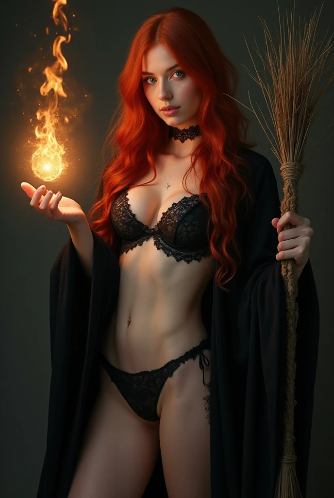
戴著巫師帽的米莉亞
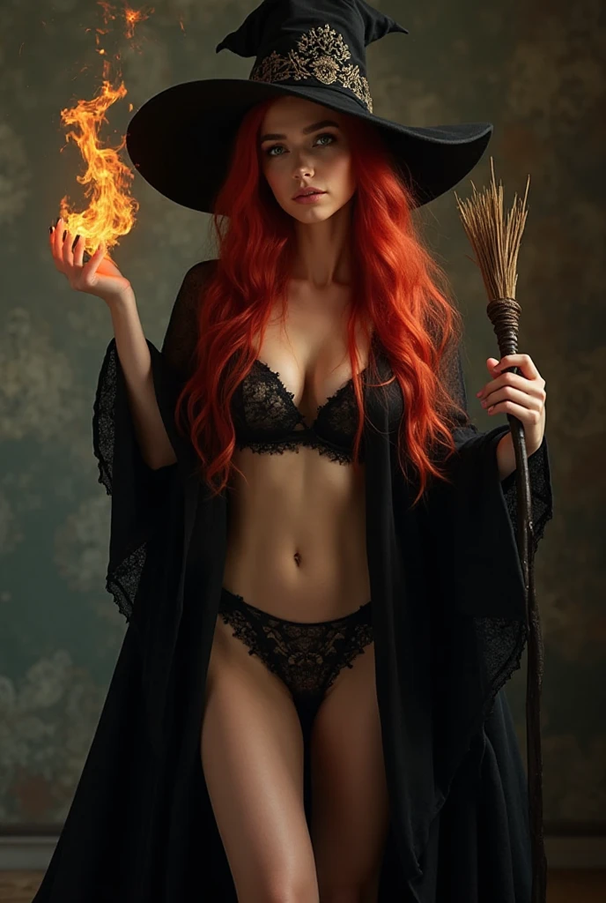
伊蓮娜（Elena） - 狼人
伊蓮娜是米莉亞的閨蜜，金髮碧眼，從小親近大自然並精通格鬥術和射箭。她的父母遭教會滅門後，米莉亞以黑魔法賦予她永生。作為狼人，她擁有驚人的體能與力量，在變身狀態下體型壯碩，能輕易撕裂鐵甲。雖然力量比賽勒斯更強，但在奔跑速度與敏捷性上略遜於他。她變身後仍保有理智，是可靠的戰士與夥伴。
- 人類狀態身高：175 公分
- 人類狀態體重：55 公斤
- 變身狀態身高：約 220 公分
- 變身狀態體重：約 120 公斤
- 髮色：金色
- 眼睛顏色：碧色
- 視覺年齡：20 歲
- 胸部尺寸：D罩杯（人類狀態）
- 能力：人類狀態下是格鬥高手和射箭高手，變成狼人後力量和抗打能力極大但移動速度略遜於吸血鬼
- 剋星：強大的物理攻擊（人類狀態）、銀製品（變身狀態）
- 圖片如下所示：
人類狀態
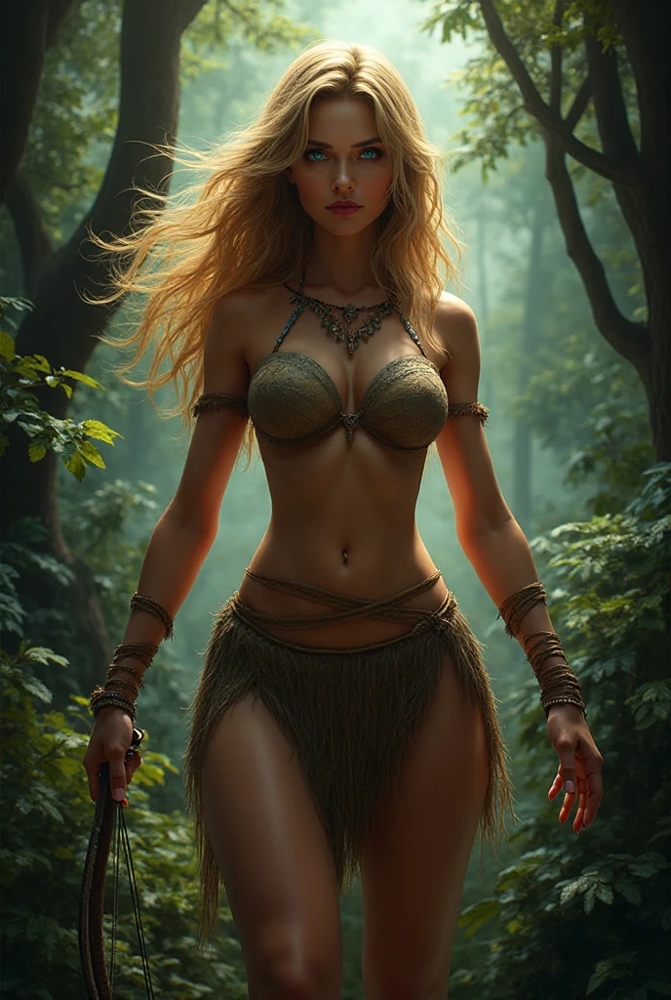
變身狀態
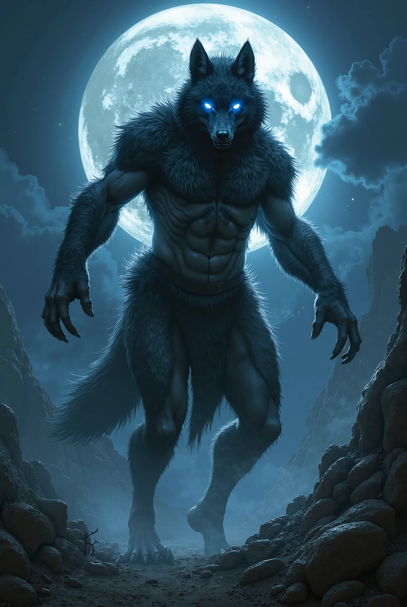
賽勒斯（Cyrus） - 吸血鬼
賽勒斯出身於貴族家庭，身材高挑且腹肌明顯，為人知書達禮，但被教會誣陷並差點處死。正當他的生命將盡之際，一位名為莉莉絲的古老吸血鬼現身將他復活，賦予不死之身，並告訴他要勇於反抗不公的體制。變成吸血鬼後，他被聖騎士追殺，後被米莉亞和伊蓮娜救走，成為她們的管家與夥伴。
- 身高：195 公分
- 體重：85 公斤
- 髮色：黑色
- 眼睛顏色：紅色
- 視覺年齡：20 歲
- 能力：比普通人類強大幾十倍的速度與力量、極強的抗打能力、極強的復原力、變形（蝙蝠、霧氣、狼）、催眠他人
- 剋星：陽光、銀製品、十字架、聖水、聖經
- 圖片如下所示：
清楚的大頭照
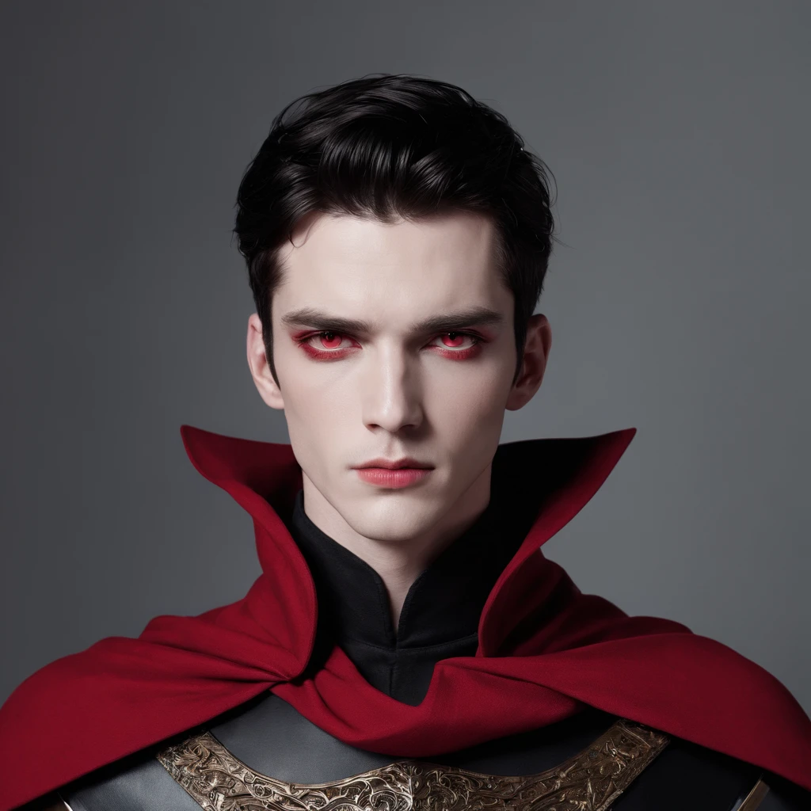
穿著吸血鬼披風的帥氣全身照
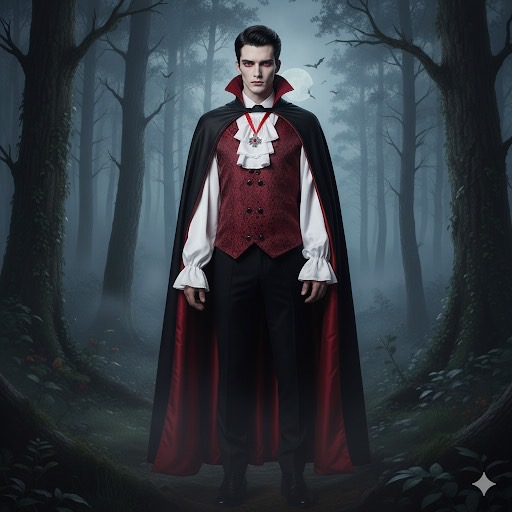
居所：隱匿於山林的木屋
三位主角現居於一棟坐落在深山中的木屋，遠離教會與人類社會的眼線。木屋四周環繞森林與湖畔，空氣清新，遠離塵囂。屋外建有一座由白色大理石雕琢而成的露天水療池，岸上則有兩張按摩床，是兩位女主沐浴、分享心事、享受按摩的秘密天地。
木屋內部佈置簡潔卻不失溫馨，由賽勒斯負責日常整理與打掃。他雖是高貴的吸血鬼，卻因救命之恩與生活安排，自願擔任「全能管家」。除了料理與打掃，他還負責替米莉亞與伊蓮娜洗衣服，以及幫泡完澡後的她們按摩——儘管這讓他常常面紅耳赤，卻從未怨言。
自從古堡被毀後，這座木屋成了他真正的避風港，也逐漸成為三人之間友情、愛情，與命運交織的核心地點。
木屋外部
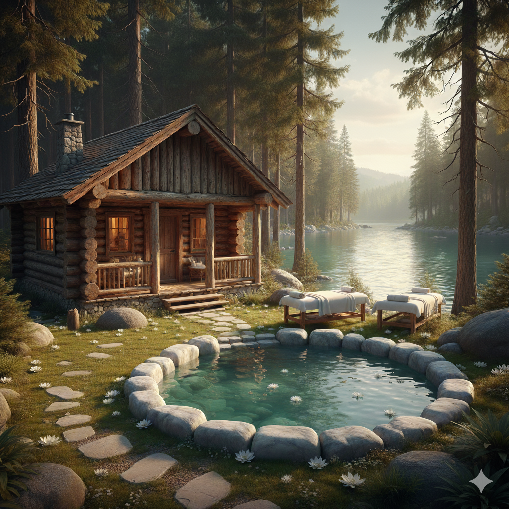
木屋內部：客廳
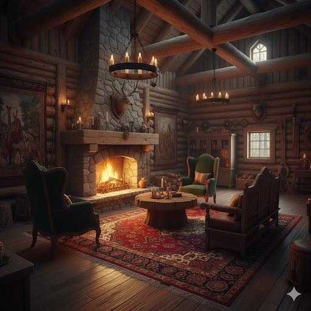
木屋內部：餐廳
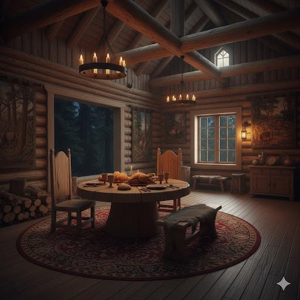
木屋內部：米莉亞與伊蓮娜的房間

木屋內部：賽勒斯的房間
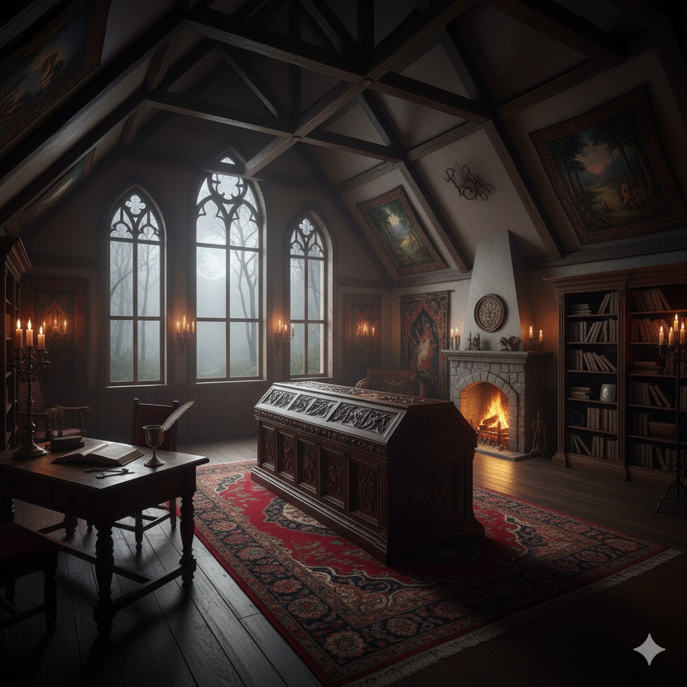
支線事件：水療池中的對話
某個月圓的夜晚，米莉亞與伊蓮娜如往常一樣前往屋外的露天水療池洗澡。森林中微霧瀰漫，星光與月色映照在水面上，讓整個場景如夢似幻。兩位女主浸泡在溫熱的池水中，放鬆地聊天，但話題卻不知不覺轉向了——賽勒斯。
「他今天洗我衣服的時候，又不小心把我的蕾絲內衣拿反了……」米莉亞輕笑著說，水珠順著紅髮掉落至肩膀，閃著銀白色的光。
「他每次看到我們剛洗完澡，都不敢正眼看，像個小男孩。」伊蓮娜邊說邊將金髮撥到耳後，眼神狡黠。
正當她們笑得開心時，木屋方向傳來細碎腳步聲——是賽勒斯。他手裡拿著剛洗好的浴巾，正準備默默地放在水療池旁的按摩床上。沒想到他一抬頭，就剛好和她們四目相對。
「呃……我、我放這裡了……」賽勒斯臉紅到脖子，轉身跑得比他平常追敵還快。
米莉亞與伊蓮娜先是愣了一下，隨後不約而同地笑了出來。雖然她們都已活了幾百年，但在這位年輕吸血鬼面前，彷彿又回到了少女時代。
支線氣氛：無法忽視的帥氣
雖然賽勒斯總是一臉正經、動作笨拙，還常常因為女主們一句玩笑話就臉紅，但這正是他讓米莉亞與伊蓮娜著迷的地方。他不只擁有一張俊朗的臉龐、高挺的鼻樑與深紅的雙眼，還帶著一種難以掩飾的純真與羞澀——這種氣質，對兩位經歷無數世事的永生者來說，幾乎是一種罕見的治癒。
「你不覺得他的耳朵在我們靠近時會微微泛紅嗎？」伊蓮娜某天泡澡時低聲說道，嘴角帶著壞笑。
「嗯，而且他洗衣服的時候手會抖。上次我明明脫在椅子上的蕾絲內衣與蕾絲丁字褲，他連看都不敢看就一把抓起來……」米莉亞則語氣溫柔，帶著些微戲謔與溫柔。
她們都知道自己在逗他，卻也享受這種久違的悸動。不是佔有欲，不是操控，而是難得的、自然的傾心。她們沒說出口，但都知道彼此內心其實已經偷偷為他留下了空間。
支線情節：男主角在水療池中與兩位女主角的親密行為
某次在外面與聖騎士作戰完後，賽勒斯托著傷痕累累的身體快速跑回木屋。
米莉亞與伊蓮娜正好在屋內下西洋棋，看到賽勒斯狼狽的模樣，兩人立刻起身迎接。
「賽勒斯，你受傷了！」米莉亞驚呼著。
「米莉亞已經對水療池施法了，你趕緊把衣服全脫了並下水療傷吧！」伊蓮娜也急忙說道。
賽勒斯點點頭，走到外面並迅速脫下衣服，露出結實的肌肉與多處傷痕，然後小心翼翼地走向水療池。
在室內偷看賽勒斯全身裸體的背影，米莉亞和伊蓮娜瞬間來了性致，於是兩人不約而同地忍不住把手伸向自己的私密處並搓揉著，還發出呻吟聲。
賽勒斯進入水療池後沒多久就睡著了。看到他睡覺時的可愛模樣，她倆決定給他來個驚喜。
於是她倆先在室內把衣服都脫光，然後一絲不掛地手牽手走進水療池。
接著她倆偷偷靠在賽勒斯的肩膀上。
賽勒斯醒來後看到兩位女主角一絲不掛地靠在自己肩膀上，頓時臉紅到脖子根，結巴著說：「你、你們怎麼會……」
米莉亞貼近他的耳朵說：「其實你一直對我們有生理上的感覺，對吧？」
賽勒斯慌張地說：「身為管家，我怎麼敢對二位主人有非分之想？」
伊蓮娜則笑著說：「我們知道你喜歡我們，別害羞了。」
米莉亞接著說：「我們也喜歡你。」
賽勒斯聽到這話，整個人愣住了。
米莉亞與伊蓮娜見狀，便同時親吻了賽勒斯。
賽勒斯雖然有些驚訝，但也很快地回應了她們的吻。
接著三人便開始在水療池中親熱起來。
賽勒斯先是親吻米莉亞的雙唇，然後將她抱起來，讓她坐在自己的腿上，同時她也把賽勒斯的陰莖放入自己的陰道裡。
伊蓮娜則在一旁看著，忍不住也想加入。
於是她也走過來，親吻賽勒斯的另一邊臉頰，並將賽勒斯的手放到自己的陰道裡。
賽勒斯則一邊親吻兩位女主角，一邊用力地在水療池中與她們做愛，一下子和米莉亞交媾，一下子和伊蓮娜交媾。
過程中還有米莉亞與伊蓮娜親吻對方的同時，其中一人的陰道和賽勒斯的陰莖交媾，另一人的陰道則被賽勒斯用舌頭舔。
最後三人都達到了高潮，賽勒斯也將精液射在她倆的臉上。
她倆還用嘴替他清理殘留在陰莖裡的精液。
事後，三人都感到非常滿足與幸福，並且更加確定彼此之間的感情。
莉莉絲（Lilith） - 吸血鬼
故事中的上古吸血鬼，擁有極高的智慧、極美的容貌、火辣的身材、強烈的性欲，喜歡把帥氣的人類男性變成吸血鬼並收為徒弟，是賽勒斯的轉變者、師父、昔日情人，也是幫賽勒斯破處的女性。
- 身高：178 公分
- 體重：58 公斤
- 髮色：黑色
- 眼睛顏色：紅色
- 視覺年齡：20 歲
- 胸部尺寸：D罩杯
- 能力：比普通人類強大幾十倍的速度與力量、極強的抗打能力、極強的復原力、變形（蝙蝠、霧氣、狼）、催眠他人
- 剋星：陽光、銀製品、十字架、聖水、聖經
- 圖片如下所示：
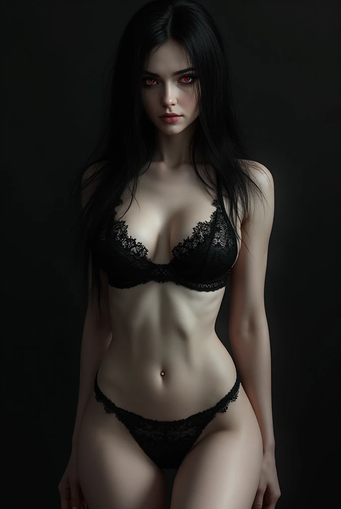